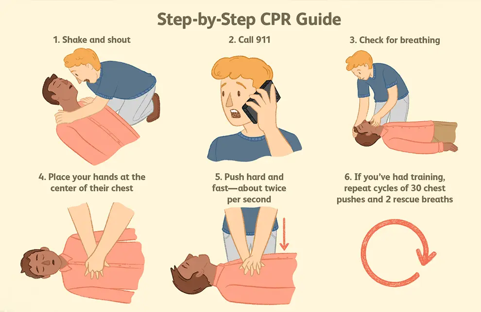
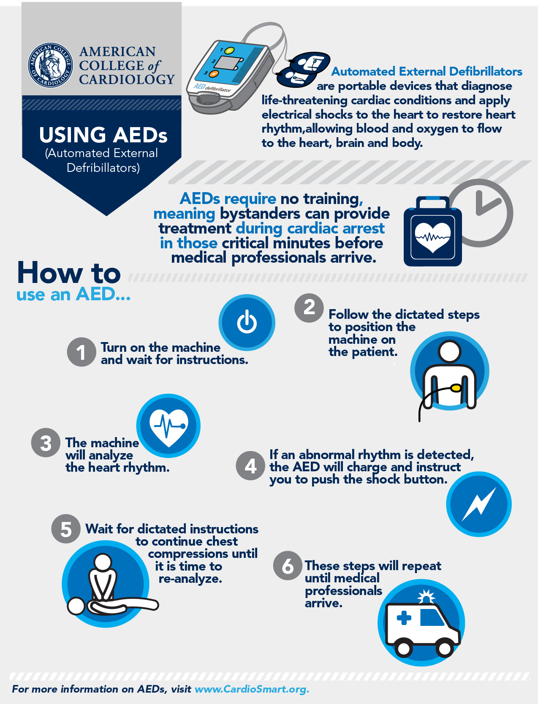

Learn. Act. Save Lives
What is Cardiac Arrest ?
Cardiac arrest is a sudden and life-threatening medical condition where the heart abruptly stops beating, leading to a loss of blood flow to the brain and other vital organs. It can occur without warning and requires immediate medical intervention. Unlike a heart attack, which is caused by a blockage in blood flow to the heart, cardiac arrest is an electrical malfunction in the heart that disrupts its pumping ability
32,457+
Cardiac Arrests Annually
32.5%
Increased Survival with CPR
5 Minutes
Time Matters the Most
How to Recognize Cardiac Arrest
1. Sudden Loss of Responsiveness
What to Look For:
The person is unconscious and does not respond to your voice, shouting, or physical stimulation like tapping their shoulders.
What This Indicates:
The brain is not receiving oxygen-rich blood due to the heart stopping, leading to a loss of consciousness.
2. No Normal Breathing
What to Look For:
Check if the person is breathing normally. In cardiac arrest:
Breathing may stop entirely.
The person may exhibit agonal breathing (gasping for air in an irregular manner).
how to Check:
Place your ear close to the person's mouth and look at their chest for movement.
If breathing is absent or abnormal, it’s a critical sign of cardiac arrest.
3. No Pulse or Heartbeat
What to Look For:
Feel for a pulse on the person’s neck (carotid artery) or wrist (radial artery).
What This Indicates:
A lack of pulse suggests the heart has stopped pumping blood. This is a definitive sign of cardiac arrest.
Note: If you're unsure how to check a pulse, prioritize CPR.
4. Sudden Collapse
What to Look For:
The person may suddenly fall to the ground or collapse without warning.
What This Indicates:
The collapse happens because the brain and muscles no longer receive oxygen and nutrients, causing a sudden loss of function.
5. Skin Changes
What to Look For:
Pale, bluish (cyanotic), or gray skin color.
Cold, clammy skin due to poor circulation.
What This Indicates:
The lack of blood flow and oxygen causes the body’s extremities and skin to change color and temperature.
6. Warning Signs Before Cardiac Arrest (Optional or Infrequent):
Some individuals may experience symptoms minutes or hours before the arrest: Chest discomfort or pain (similar to a heart attack). Dizziness, light-headedness, or fainting. Shortness of breath or difficulty breathing. Heart palpitations (feeling that the heart is beating irregularly or too fast). While these symptoms can occur, cardiac arrest often strikes without warning
Responding to Cardiac Arrest
1. Call for Help
Immediately dial emergency services (102 the local emergency number). Cardiac arrest requires immediate medical intervention, so get professional help on the way as soon as possible.
2. Check for Breathing
Ensure the person is not breathing or is breathing abnormally (gasping). If there is no normal breathing, proceed with CPR.
3. Begin Chest Compressions (CPR)
Place your hands, one on top of the other, in the center of the chest. Perform chest compressions by pushing down hard and fast (at least 2 inches deep at a rate of 100-120 compressions per minute). Allow the chest to fully recoil between compressions.
4. Provide Rescue Breaths (if trained)
If you are trained in CPR, give 2 rescue breaths after every 30 chest compressions. Tilt the person's head back, pinch their nose, and breathe into their mouth, ensuring the chest rises. If you are untrained, continue only with chest compressions (Hands-Only CPR).
5. Use an AED (Automated External Defibrillator)
If an AED is available, turn it on and follow the voice prompts. Attach the electrode pads to the person’s bare chest. The AED will analyze the heart rhythm and advise whether a shock is needed. If prompted, deliver a shock by pressing the button.
6. Continue CPR Until Help Arrives
Keep performing CPR (compressions and breaths) or follow the AED's instructions until emergency medical professionals arrive or the person starts to show signs of life (breathing, moving).
Key Ways to Prevent Cardiac Arrest

1. Maintain a Healthy Diet
Eat a balanced diet rich in fruits, vegetables, whole grains, lean proteins, and healthy fats. Limit sodium and saturated fats to prevent cardiovascular disease.
2. Exercise Regularly
Stay physically active with regular exercise such as walking, jogging, swimming, or cycling. Aim for at least 150 minutes of moderate-intensity exercise per week.
3. Avoid Smoking
Quit smoking and avoid secondhand smoke to prevent damage to blood vessels and reduce the risk of cardiovascular disease.
4. Limit Alcohol Consumption
Drink alcohol in moderation, as excessive drinking can increase blood pressure and lead to heart problems.
5. Manage Stress
Practice stress management techniques such as deep breathing, yoga, meditation, or regular relaxation to reduce stress impact on your heart.
6. Monitor Blood Pressure
Keep blood pressure in check by monitoring it regularly and following your healthcare provider’s advice for managing high blood pressure.
7. Control Cholesterol Levels
Maintain healthy cholesterol levels through a heart-healthy diet, exercise, and medications if necessary.
8. Maintain a Healthy Weight
Stay within a healthy weight range to reduce strain on the heart and lower the risk of heart disease and diabetes.
9. Diabetes Management
Control diabetes by following medical advice, as high blood sugar can damage blood vessels and increase the risk of heart disease.
10. Regular Health Checkups
Get regular checkups to monitor heart health, cholesterol, blood pressure, and other risk factors.
11. Know Your Family History
Be aware of your family history of heart disease. Share this information with your healthcare provider to determine the appropriate screening.
12. Seek Treatment for Heart Conditions
Follow your healthcare provider’s advice if you have heart conditions such as arrhythmia or heart disease and take prescribed medications as needed.
Emergency Tutorial's
CPR Tutorial
Steps to Perform CPR on a Victim
-
Ensure Safety
- Check your surroundings to ensure it is safe to approach the victim.
- Make sure there are no hazards like fire, traffic, or electrical dangers.
-
Check Responsiveness
- Tap the person on their shoulder and loudly ask, “Are you okay?”
- Look for any movement or response.
-
Call for Help
- If there is no response, call emergency services immediately:
- Dial 112 (India) or the local emergency number.
- Ask someone nearby to call while you begin CPR.
- Request an AED (Automated External Defibrillator) if available.
-
Check Breathing
- Tilt the victim's head back slightly and lift the chin to open the airway.
- Look, listen, and feel for normal breathing for no more than 10 seconds.
- If the person is not breathing or only gasping, begin CPR.
-
Start Chest Compressions
- Place the heel of one hand in the center of the chest (on the breastbone).
- Place the other hand on top, interlock your fingers, and keep your elbows straight.
- Push hard and fast:
- Compress the chest at least 2 inches deep for adults.
- Push at a rate of 100–120 compressions per minute.
- Allow the chest to return to its normal position after each compression.
-
Provide Rescue Breaths (if trained)
- After 30 compressions, give 2 rescue breaths:
- Pinch the nose shut and cover the person’s mouth with yours to form a seal.
- Blow air into their lungs until you see the chest rise.
- Repeat this process for 2 breaths.
- If you are not trained in rescue breaths, continue chest compressions only (Hands-Only CPR).
-
Continue CPR
- Keep performing cycles of 30 compressions and 2 breaths or Hands-Only CPR until:
- The person starts breathing or moving.
- Emergency medical help arrives.
- You are physically unable to continue.
-
Use an AED (if available)
- If someone brings an AED, follow its instructions to analyze the heart rhythm and deliver a shock if needed.
- Resume CPR immediately after using the AED.
-
Special Considerations
- For Children (1-8 years old):
- Use one hand for compressions.
- Compress about 1.5–2 inches deep.
- For Infants (under 1 year):
- Use two fingers for chest compressions.
- Compress about 1.5 inches deep.
- In a Public Place: Ask for help loudly in the local language, e.g., “Is anyone a doctor?”
- If the Victim is Wet: Move them to a dry area before starting CPR.
AED Tutorial
Steps to Use an AED
-
Ensure Safety
- Check the surroundings for any hazards (e.g., water, fire, electricity).
- Ensure the victim is on a flat, dry surface.
- Confirm that no one, including yourself, is in contact with the victim.
-
Turn on the AED
- Locate the AED and turn it on.
- Follow the audible and visual prompts provided by the device.
-
Expose the Chest
- Remove or cut away clothing to expose the victim’s chest.
- Ensure the chest is dry. If it’s wet or sweaty, wipe it with a cloth or towel.
-
Apply the Pads
- Open the AED pad package and remove the adhesive backing.
-
Place the pads as shown on the diagrams:
- For adults and children above 8 years old:
- One pad goes on the upper right side of the chest.
- The other pad goes on the lower left side of the chest, below the armpit.
- For infants and children under 8 years old:
- Use pediatric pads if available.
- If using standard pads, ensure they do not overlap.
-
Allow the AED to Analyze
- Stop CPR and allow the AED to analyze the heart rhythm.
- Ensure no one is touching the victim during this step.
- The AED will decide whether a shock is needed.
-
Deliver the Shock (if Advised)
- Loudly announce, “Clear!” to ensure no one is touching the victim.
- Press the flashing shock button to deliver the shock, or let the AED deliver it automatically.
-
Resume CPR
- After the shock is delivered, or if no shock is advised, resume chest compressions immediately.
- Continue CPR and follow the AED prompts.
-
Continue Until Help Arrives
- Keep performing CPR and following AED instructions until emergency help arrives or the victim shows signs of life.
-
Special Considerations
- Place the pads at least 1 inch away from a pacemaker or implanted device.
- Shave chest hair if it interferes with pad placement.
- Dry the chest thoroughly if the victim is wet.
- For children and infants, use pediatric pads or place one pad on the chest and the other on the back.
Real-Life Survivor Stories
-
UC Health’s experts helped Will Achberger defy the odds and overcome a heart attack that led to cardiac arrest.
Will Achberger, 56, considers himself lucky in more ways than one. He has been married for 35 years to his high school sweetheart and is self-employed in a family business that was started by his father. He even performed as a drummer in a local band for 12 years. But on Jan. 19, 2020, Will’s life changed in an unexpected, dramatic way. Will never expected to add cardiac arrest survivor as part of his life story. There is no family history of heart failure......read more
-
Mass communication student Ankita Thool learned CPR,saves a life
She was travelling from Wardha to Nagpur to appear for a bank PO examination in a shared taxi when her middle-aged co-passanger suffered a cardiac arrest. Sensing the gravity of the situation ,Ankita knew she must act fast. wasting no time ,she performs CPR which was crucial in keeping man's bload flow to his brain and vital organs until medical help arrived......Read more